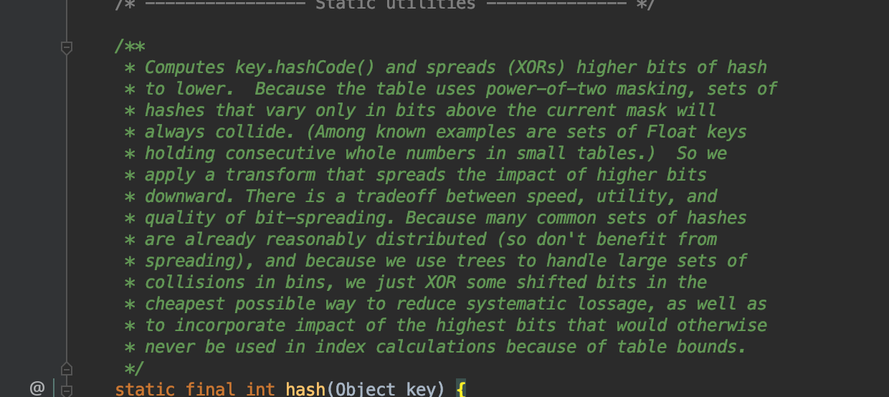
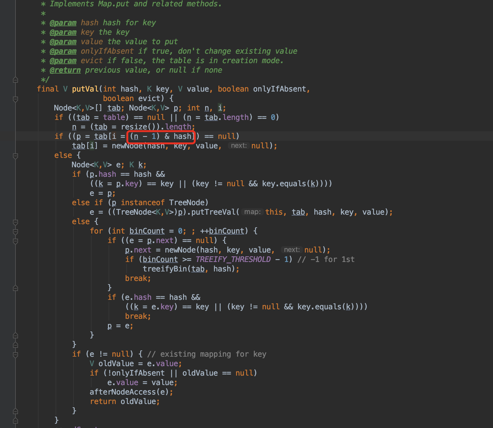
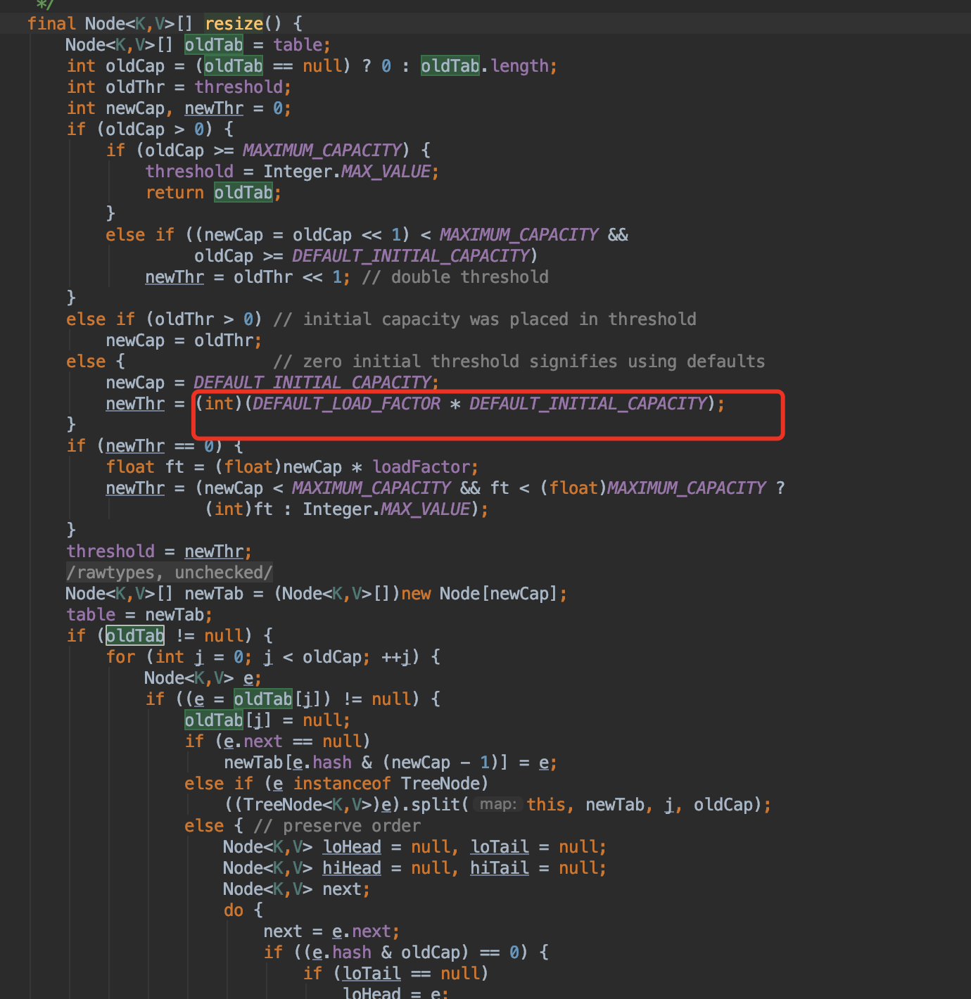
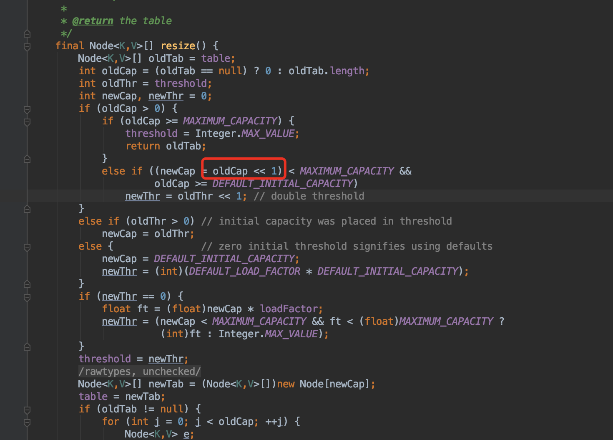
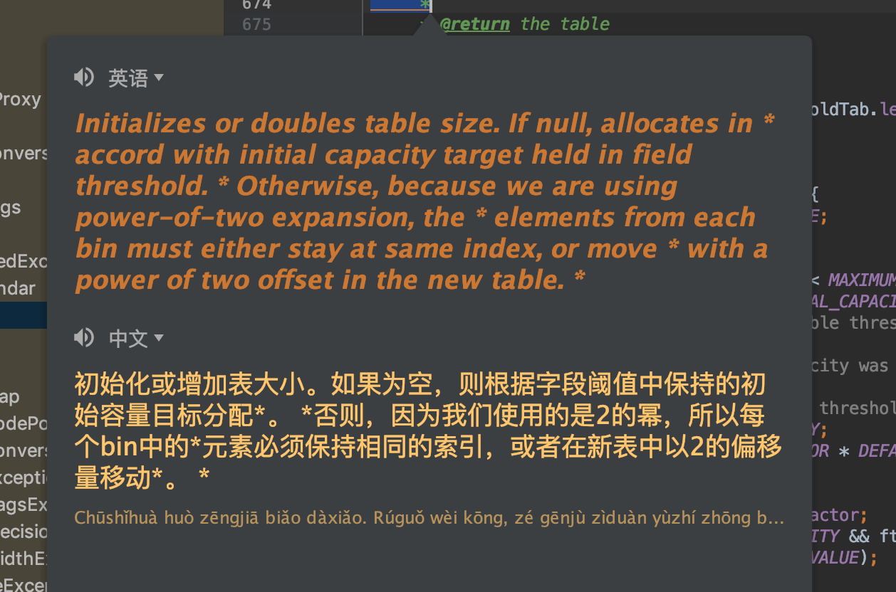
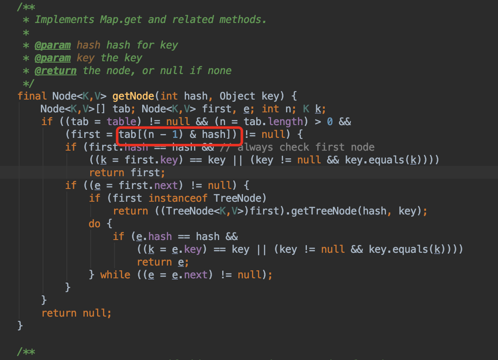

上文提到了hashMap的原理，这章我们决定好好系统研究一下他的默认值以及hashcode的比较。（理解一个东西最好的办法就是阅读源码以及源码注释）
全文会主要讲解以下几个问题？
1.为什么默认值是16？
2.什么时候扩容？
3.为什么加载因子是0.75？
为什么默认值是16？什么时候扩容？
首先需要知道hashmap的底层数据结构，是数组加链表。既然这样就一定会发生hash碰撞（不了解的请看之前的文章）。其实个人觉得16就是为了均匀分布。使碰撞减少。同时通过阅读源码我们可以知道如何生成hash（java 1.8源码）
static final int hash(Object key) {
int h;
return (key == null) ? 0 : (h = key.hashCode()) ^ (h >>> 16);
}

以上就是一个生成hash的解释，相信大家也没有详细看过，在这里我给大家做一下解释。就是调用object本身的生成hashcode 和 h >>>（无符号右移运算符）16位之后
取异或的值就是hash值。具体什么是异或、无符号右移。请自己自行百度谷歌吧。

这个图中就是hash与初始化的最大值减1，做与运算。然后确定存储的位置。有可能有人会问了。为什么是16？不是10、9、25、之类的呢？为什么要减1呢？
其实这里涉及到一个简单的逻辑，下面给大家看一下：
十进制: 201314
二进制: 11 0001 0010 0110 0010
假设初始化大小为16
15转化为二进制: 1111
index : 11 0001 0010 0110 0010 & 1111 =0010 为 3
假设初始化大小为10
10转化为二进制: 1010
index: 11 0001 0010 0110 0010 & 1010=0010 为 3
因为是将二进制进行按位于，(16-1) 是
1111,末位是1，这样也能保证计算后的index既可以是奇数也可以是偶数，并且只要传进来的key足够分散，均匀那么按位于的时候获得的index就会减少重复，这样也就减少了hash的碰撞以及hashMap的查询效率。
那么到了这里你也许会问？ 那么就然16可以，是不是只要是2的整数次幂就可以呢？那为什么不是8,4呢？ 个人觉得因为是8或者4的话很容易导致map扩容影响性能，如果分配的太大的话又会浪费资源，所以就使用16作为初始大小。
什么时候扩容呢？源码中给了答案：

达到你定义的初始化值的0.75倍时候就会扩容到原来的2倍。有的人又要问了为什么是2倍，不是0.5，1.5之类的呢？源码中给了一个方法：根据传过来的定义的map大小来进行或运算之后得到扩容之后的2倍。

看了下源码注释如下：

个人觉得2倍之后还是方便取值或者做与运算：下面也是源码中的取值的方法：

为什么是0.75？
源码中给到了一些，简单来说就是为了减少开销？如果为0.5 时候扩容会极大浪费空间。0.8之类的应该是hash碰撞比较高，所以选择一个折中值。而且和默认16一同使用，则是一个完美的加载因子。
<p>As a general rule, the default load factor (.75) offers a good
* tradeoff between time and space costs. Higher values decrease the
* space overhead but increase the lookup cost (reflected in most of
* the operations of the <tt>HashMap</tt> class, including
* <tt>get</tt> and <tt>put</tt>). The expected number of entries in
* the map and its load factor should be taken into account when
* setting its initial capacity, so as to minimize the number of
* rehash operations. If the initial capacity is greater than the
* maximum number of entries divided by the load factor, no rehash
* operations will ever occur.
我等采石之人，当心怀大教堂之愿景！欢迎关注我的公众号！！